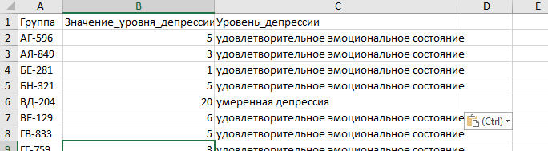

Результаты каждого тестируемого
У каждого прошедшего тестирование будут отображаться численные показатели и уровни шкалы всех тестов использованных при тестировании.

Список тестируемых чьи результаты (в тестах тревожности, депрессии) требуют особого внимания
В список попадают все у кого при прохождении следующих тестов: Шкала тревожности Кондаша, Шкала депрессии Бека, Шкала безнадежности Бека, Шкала депрессии Цунга
выявлено минимум одно из следующих состояний - тяжелая депрессия, безнадежность тяжёлая, Очень высокий уровень тревожности, истинное депрессивное состояние.

Список тестируемых чьи результаты (в тестах тревожности, депрессии) находятся в зоне риска
В список попадают все у кого при прохождении следующих тестов: Шкала тревожности Кондаша, Шкала депрессии Бека, Шкала безнадежности Бека, Шкала депрессии Цунга
выявлено минимум два из следующих состояний - умеренная депрессия, безнадежность умеренная, Высокий уровень тревожности, субдепрессивное состояние или маскированная депрессия.

Подсчет количества прошедших тестирование по группам, номерам классов.
Сколько человек из каждой группы или класса прошло тестирование

Результаты каждого теста по отдельности
Подробные результаты теста с указанием диапазонов нормальности и субшкал отсортированные по убыванию главного показателя.

Ответы каждого теста по отдельности для проверки
Ответы тестируемых преобразованные в числа для проверки правильности работы программы.
Подсчет среднего значения показателя и уровня шкалы теста в разрезе группы, класса, курса, номера класса.
Для каждой группы высчитывается среднее арифметическое значение и в согласно ему присваивается .
